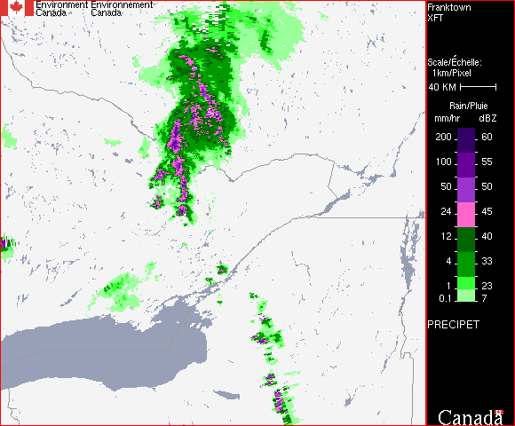
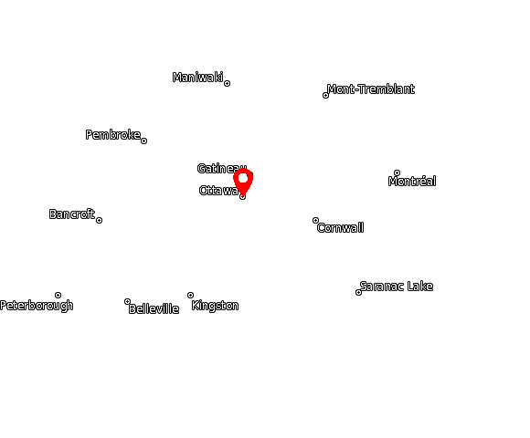

<!--[if lt IE 9]> -->
<link rel="stylesheet" href="../template/GCWeb/css/ie8-wet-boew.min.css" />
<link href="../GCWeb/assets/favicon.ico" rel="shortcut icon" />
<link rel="stylesheet" href="../GCWeb/css/ie8-theme.min.css" />
<link rel="stylesheet" href="../cacheable/css/city/jquery-ui-1.10.3.custom.min.css">
<script src="../wet-boew/js/ie8-wet-boew.min.js"></script>


<![endif]-->
<!--[if lte IE 9]>
<![endif]-->

<noscript><link rel="stylesheet" href="../wet-boew/css/noscript.min.css" /></noscript>
<link rel="stylesheet" href="../cacheable/css/city/jquery-ui-1.10.3.custom.min.css" />
<link rel="stylesheet" href="../template/wxo/css/wxo.css" />
<!-- <link rel="stylesheet" href="/template/wxo/css/wxo.css" /> -->
<!--[if IE 8]>
<link href="../cacheable/css/radar/radar2.css" rel="stylesheet" type="text/css" />
<![endif]-->
<script type="text/javascript" src="../cacheable/js/radar/Base.js"></script>


<link rel="stylesheet" href="../cacheable/css/radar/controller.css" />
<link rel="stylesheet" href="../cacheable/css/radar/radar2.css" />

<script>
	if (typeof composite_cities_active === 'undefined'){
		var composite_cities_active = 'yes';
	}
</script>  

<section>
	

	<style>
.radarimg {
	
	border: blue 3px;
	
}

	</style>
	
	
<div class="animator" id="animator" >

	<div class="content row">

		<div id="animation" class="col-md-8">

		
				<p class="text-center margin-bottom-none center-block img-responsive" style="background-color: black; width: 580px; color: white";>PRECIPET - Rain / Pluie</p>
			

			<div id="animation-info" class="row text-center animation-info">
			</div>

			
			<div style="position: relative;">

				
			
			

			

			

			

			

			

			
			
			

			<div class="wrapper">
			
			
				<div id="wxo-animator" data-image-current="6" data-image-count="7" data-image-lightning-id="NAT" 
				data-wxo-anim-0="../data/radar/detailed/temp_image/XFT_PRECIP_RAIN_2017_08_22_10_00.GIF" data-wxo-label-0="#1" 
				data-wxo-anim-1="../data/radar/detailed/temp_image/XFT_PRECIP_RAIN_2017_08_22_10_20.GIF" data-wxo-label-1="#2" 
				data-wxo-anim-2="../data/radar/detailed/temp_image/XFT_PRECIP_RAIN_2017_08_22_10_40.GIF" data-wxo-label-2="#3" 
				data-wxo-anim-3="../data/radar/detailed/temp_image/XFT_PRECIP_RAIN_2017_08_22_11_00.GIF" data-wxo-label-3="#4" 
				data-wxo-anim-4="../data/radar/detailed/temp_image/XFT_PRECIP_RAIN_2017_08_22_11_20.GIF" data-wxo-label-4="#5" 
				data-wxo-anim-5="../data/radar/detailed/temp_image/XFT_PRECIP_RAIN_2017_08_22_11_40.GIF" data-wxo-label-5="#6" 
				data-wxo-anim-6="../data/radar/detailed/temp_image/XFT_PRECIP_RAIN_2017_08_22_12_00.GIF" data-wxo-label-6="#7" >

					<div id="wxo-carousel" class="wxo-ie8-hide">
					
					<p class="wxo-loading-msg text-center mrgn-tp-lg mrgn-bttm-lg">Loading images...</p>
											
						 <canvas id="wxo-canvas" class="wxo-active img-responsive center-block" data-image-current="6" data-image-count="7">Please enable JavaScript to view the animation.</canvas>
				
					
					</div>

				</div> 
				
			</div><!-- wrapper -->
			
			</div>

		</div><!-- id="animation" class="col-md-8" -->
 
		<aside class="col-md-4 hidden-xs hidden-sm hidden-print">
		<div class="well">
		<h2 class="mrgn-tp-0">Weather Links</h2>
		<ul class="lst-spcd">
		<li><a href="../canada_e.html">Canadian Weather</a></li>
		<li><a href="../warnings/index_e.html">Public Alerts - Canada</a></li>
		<li><a href="../../weather/radar/index_e.html">Radar - Canada</a></li>
		<li><a href="../../weather/satellite/index_e.html">Satellite - Canada</a></li>
		<li><a href="/saisons/index_e.html">Seasonal forecasts</a></li>
		<li><a href="../mainmenu/airquality_menu_e.html">Air Quality </a></li>
		<li><a href="/marine/index_e.html">Marine - Canada</a></li>
		<li><a href="http://ec.gc.ca/rhc-wsc/default.asp?lang=En&amp;n=4EED50F1-1">Water Level and Flow</a></li>
		</ul>
		</div>
		</aside>
		
	</div><!-- class="content row" -->
	
</div><!-- class="animator" id="animator" -->
 
 
 
 
 
 
 
 
 
 
 
 

	<!--
/* ============================================================ */
/* ============================================================ */
/* ============================================================ */
/* ============================================================ */
/* ============================================================ */
/* ============================================================ */
/* ============================================================ */
/* ============================================================ */
/* ============================================================ */
/* ============================================================ */
-->
 
 
<div class="clearfix"></div>


			</div>


</div>
	
	<div id="animator-controller" class="hidden-print">
		<div class="hidden-xs hidden-sm hidden-md hidden-lg">
			<b>Animation</b>
		</div>

		<div class="controller-box row hidden-xs hidden-sm hidden-md hidden-lg">
			<div class="col-sm-5 col-xs-10 controller-set  margin-top-medium">
				
				<button class="wxo-anim-play btn btn-default btn-sm" title="Play">
          			<span class="glyphicon glyphicon-play"></span>
          			<span class="wb-inv">Play</span> 
				</button>
				   
				 <button class="wxo-anim-stop btn btn-default btn-sm" title="Pause">
					<span class="glyphicon glyphicon-stop"></span>
					<span class="wb-inv">Pause</span>
				</button>
				
				<button class="wxo-anim-first btn btn-default btn-sm" title="First Image">
					<span class="glyphicon glyphicon-fast-backward"></span>
					<span class="wb-inv">First Image</span>
				</button>
	  
				 <button class="wxo-anim-prev btn btn-default btn-sm" title="Previous Image">
					<span class="glyphicon glyphicon-backward"></span>
					<span class="wb-inv">Previous Image</span>
				</button>

				<button class="wxo-anim-next btn btn-default btn-sm" title="Next Image">
					<span class="glyphicon glyphicon-forward"></span>
					<span class="wb-inv">Next Image</span>
				</button>

				<button class="wxo-anim-last btn btn-default btn-sm mrgn-rght-md" title="Last Image">
					<span class="glyphicon glyphicon-fast-forward"></span>
					<span class="wb-inv">Last Image</span>
				</button>
			</div>
			<div class="col-sm-4 col-xs-10 controller-set margin-top-medium">
				<span>
					Speed:
				</span>
				 <button class="wxo-anim-slower btn btn-default btn-sm" title="Slower">
						<span class="glyphicon glyphicon-minus-sign"></span>
						<span class="wb-inv">Slower</span>
				</button>
				
				<button class="wxo-anim-faster btn btn-default btn-sm" title="Faster">
						<span class="glyphicon glyphicon-plus-sign"></span>
						<span class="wb-inv">"Faster</span>
				</button>
				
				<button class="wxo-anim-speed-reset btn btn-default btn-sm">Reset
				</button>
			
			</div>

			<div class="hidden-xs col-sm-3 controller-set margin-top-small">
			
					<div id="duration-label" >Time:</div>
					
					
					<div class="radio">
						<label>
							<input type="radio" name="group1" value="short" checked> Short (1hr) <br>
						</label> 
					</div>
				
					<div class="radio">
						<label>
							<input type="radio" name="group1" value="long" > Long (3hr) <br>
						</label>
				</div>
					
					
					<!-- <div id="duration-label" >Time:</div>
	
			<div class="radio"><label><input type="radio" checked="checked" name="duration-mob" id="short-mob" value="short" />Short (1 Hour)</label></div>
			<div class="radio"><label><input type="radio"  name="duration-mob" id="long-mob" value="long" />Long (3 Hour)</label></div>
				
	
			</div> -->

			</div>

		</div>

				<div class="hidden-xs margin-top-large">
			<form action="/radar/index_e.html" method="get">
	<b>Overlays</b>
	<div class="controller-box">
		<!-- starts empty -->
		<table id="animation-overlays" class="hidden-md hidden-lg hidden-sm animation-overlays" >
			<tbody>
				<tr>
					<td class="check">
						<input type="checkbox" class="overlay-box" id="overlay_default_cities" checked>
					</td>
					<td>
						<label for="overlay_default_cities" class="wxo-lbl-clr">Cities</label>
					</td>
					<td class="check">
						<input type="checkbox" class="overlay-box" id="overlay_additional_cities" >
					</td>
					<td>
						<label for="overlay_additional_cities" class="wxo-lbl-clr">More Cities</label>
					</td>
					<td class="check">
						<input type="checkbox" checked class="overlay-box" id="overlay_roads">
					</td>
					<td>
						<label for="overlay_roads" class="wxo-lbl-clr">Roads</label>
					</td>
				</tr>
				<tr>
					<td class="check">
						<input type="checkbox"  class="overlay-box"  id="overlay_road_labels">
					</td>
					<td>
						<label for="overlay_road_labels" class="wxo-lbl-clr">Road Numbers</label>
					</td>
					<td class="check">
						<input type="checkbox"  class="overlay-box"  id="overlay_rivers">
					</td>
					<td>
						<label for="overlay_rivers" class="wxo-lbl-clr">Rivers</label>
					</td>
					<td class="check">
						<input type="checkbox" class="overlay-box" id="overlay_radar_circle" checked>
					</td>
					<td>
						<label for="overlay_radar_circle" class="wxo-lbl-clr">Radar Circles</label>
					</td>
				</tr>
			</tbody>
		</table>

			<noscript>
			<table id="animation-overlays-nojs" class="animation-overlays">
				<tbody>					
					<tr>
						<td class="check">
							<input name="overlay_cities" class="overlay-box" id="overlay_cities" type="checkbox" checked/>
						</td>
						<td>
							<label class="wxo-lbl-clr" for="overlay_cities">Cities</label>
						</td>
						<td class="check">
							<input name="overlay_cities2" class="overlay-box" id="overlay_cities2" type="checkbox"  />
						</td>
						<td>
							<label class="wxo-lbl-clr" for="overlay_cities2">More Cities</label>
						</td>
						<td class="check">
							<input name="overlay_roads" class="overlay-box "id="overlay_roads_ns" type="checkbox"  checked/>
						</td>
						<td>
							<label class="wxo-lbl-clr" for="overlay_roads_ns">Roads</label>
						</td>
					</tr>
					<tr>
						<td class="check">
							<input name="overlay_roadnum" class="overlay-box "id="overlay_roadnum" type="checkbox"  />
						</td>
						<td>
							<label class="wxo-lbl-clr" for="overlay_roadnum">Road Numbers</label>
						</td>
						<td class="check">
							<input name="overlay_rivers" class="overlay-box" id="overlay_rivers_ns" type="checkbox"  />
						</td>
						<td>
							<label class="wxo-lbl-clr" for="overlay_rivers_ns">Rivers</label>
						</td>
						<td class="check">
							<input name="overlay_radcirc" class="overlay-box" id="overlay_radcirc" type="checkbox" checked/>
						</td>
						<td>
							<label class="wxo-lbl-clr" for="overlay_radcirc">Radar Circles</label>
						</td>
					</tr>
					<tr>
						<td colspan="3">
											
							<input type="hidden" value="XFT" name="id">
							<input type="hidden" value="1" name="overlay_form2">							
							<input class="submit" type="submit" title="Submit" value="Submit"/>
						</td>

					</tr>
				</tbody>
			</table>
			</noscript>

		<!--<ul id="animation-overlays"></ul>-->
	</div>
</form>
		</div>
								
		
	<div class="hidden-xs margin-top-medium">
				<b>Intensity Scale</b>
					<form action="/radar/index_e.html" method="get">
						<div class="controller-box ">
										<input type="hidden" value="XFT" name="id">
					
					<input id="intensity-detailed" type="radio" checked="checked" value=1 name="intensity_detailed">
					<label id="intensity-detailed-label" for="intensity-detailed" class="wxo-lbl-clr">8 colours</label>
					<input id="intensity-standard" type="radio"  value=0 name="intensity_detailed">
					<label id="intensity-standard-label" for="intensity-standard" class="wxo-lbl-clr">14 colours</label>
					<noscript><br><input class="submit" type="submit" title="submit-intensity" value="Submit"/></noscript>
						</div>
					</form>
			</div>
		</div>
</div>

<div class="hidden-sm hidden-md hidden-lg">
	<!-- No javascript stuff, not needed	<noscript class="">
		<div class="col-xs-12" style="padding-left: 35px">
			<form action="/radar/index_e.html" method="get">
			<h5>Overlays</h5>
			<div class="checkbox">
				<input name="overlay_cities" id="overlay_citiesxs" type="checkbox" checked/>
				<label class="wxo-lbl-clr" for="overlay_cities">Cities</label>
			</div>
						<div class="checkbox">
				<input name="overlay_cities2" id="overlay_cities2xs" type="checkbox"  />
				<label class="wxo-lbl-clr" for="overlay_cities2">More Cities</label>
			</div>
			<div class="checkbox">
				<input name="overlay_roads" id="overlay_roads_nsxs" type="checkbox"  checked/>
				<label class="wxo-lbl-clr" for="overlay_roads_ns">Roads</label>
			</div>
			<div class="checkbox">
				<input name="overlay_roadnum" id="overlay_roadnumxs" type="checkbox"  />
				<label class="wxo-lbl-clr" for="overlay_roadnum">Road Numbers</label>
			</div>
			<div class="checkbox">
				<input name="overlay_rivers" id="overlay_rivers_nsxs" type="checkbox"  />
				<label class="wxo-lbl-clr" for="overlay_rivers_ns">Rivers</label>
			</div>
			<div class="checkbox">
				<input name="overlay_radcirc" id="overlay_radcircxs" type="checkbox" checked/>
				<label class="wxo-lbl-clr" for="overlay_radcirc">Radar Circles</label>
			</div>
			
					
			<input class="submit" type="submit" title="Submit" value="Submit"/>
							
			<input type="hidden" value="XFT" name="id">
			<input type="hidden" value="1" name="overlay_form2">	
			</form>
						<form action="/radar/index_e.html" method="get">
			<h5>Intensity Scale</h5>
			<div class="radio">
				<input id="intensity-detailedxs" type="radio" checked="checked" value=1 name="intensity_detailed">
				<label id="intensity-detailed-labelxs" for="intensity-detailed" >8 colours</label>
			</div>
			<div class="radio">
				<input id="intensity-standardxs" type="radio"  value=0 name="intensity_detailed">
				<label id="intensity-standard-labelxs" for="intensity-standard" >14 colours</label> 
			</div>
			<input class="submit" type="submit" title="Submit" value="Submit"/>
										
			<input type="hidden" value="XFT" name="id">
			
			</form>
		</div>
	</noscript> -->
	<details class="no-js-hide hidden-xs">
		<summary>Overlays</summary>
		<div class="checkbox">
			<label><input id="wxo-overlay-cities" type="checkbox" checked/>Cities</label>
		</div>
				<div class="checkbox">
			<label><input id="wxo-overlay-more-cities" type="checkbox"  />More Cities</label>
		</div>
		<div class="checkbox">
			<label><input id="wxo-overlay-roads" type="checkbox" checked />Roads</label>
		</div>
		<div class="checkbox">
			<label><input id="wxo-overlay-road-numbers" type="checkbox"  />Road Numbers</label>
		</div>
		<div class="checkbox">
			<label><input id="wxo-overlay-river" type="checkbox"  />River</label>
		</div>
		<div class="checkbox">
			<label><input id="wxo-overlay-radar-circles" type="checkbox" checked />Radar Circles</label>
		</div>
			</details>
	
 
	<details class="no-js-hide hidden-xs">
		<summary>Intensity Scale</summary>
			<div class="radio "><label><input type="radio" checked="checked" name="intensity-mob" id="intensity-detailed-mob" />8 Colours</label></div>
			 <div class="radio"><label><input type="radio"  name="intensity-mob" id="intensity-standard-mob" />14 Colours</label></div> 
	</details> 
	<details class="no-js-hide hidden-xs">
		<summary>Time Frame</summary>
			<div class="radio"><label><input type="radio" checked="checked" name="duration-mob" id="short-mob" value="short" />Short (1 Hour)</label></div>
			<div class="radio"><label><input type="radio"  name="duration-mob" id="long-mob" value="long"/>Long (3 Hour)</label></div>
	</details>
	
	
	<div class="clearfix"></div>
	
	
	<details>
		<summary>Radar - Canada</summary>
		<ul class="cdn-ul">
			<li> <a href="index_e.html">Canada</a></li>
		</ul>
		<details>
			<summary>Pacific</summary>
			<ul>
				<li class="rad-loc"> <a href="index_e.html?id=PAC">Pacific Region</a></li>                         
				<li class="rad-loc"> <a href="index_e.html?id=WUJ">Aldergrove (near Vancouver)</a></li>
				<li class="rad-loc"> <a href="index_e.html?id=XPG">Prince George</a></li>
				<li class="rad-loc"> <a href="index_e.html?id=XSS">Silver Star Mountain (near Vernon)</a></li>
				<li class="rad-loc"> <a href="index_e.html?id=XSI">Victoria</a></li>	
			</ul>					
		</details>
		<details>
			<summary>Prairies</summary>
			<ul>
				<li class="rad-loc"><a href="index_e.html?id=WRN">Prairies Region</a></li>
				<li class="rad-loc"><a href="index_e.html?id=XBE">Bethune (near Regina)</a></li>
				<li class="rad-loc"><a href="index_e.html?id=WHK">Carvel (near Edmonton)</a></li>
				<li class="rad-loc"><a href="index_e.html?id=XFW">Foxwarren (near Brandon)</a></li>
				<li class="rad-loc"><a href="index_e.html?id=WHN">Jimmy Lake (near Cold Lake)</a></li>
				<li class="rad-loc"><a href="index_e.html?id=XRA">Radisson (near Saskatoon)</a></li>
				<li class="rad-loc"><a href="index_e.html?id=XBU">Schuler (near Medicine Hat)</a></li>
				<li class="rad-loc"><a href="index_e.html?id=WWW">Spirit River (near Grande Prairie)</a></li>
				<li class="rad-loc"><a href="index_e.html?id=XSM">Strathmore (near Calgary)</a></li>
				<li class="rad-loc"><a href="index_e.html?id=XWL">Woodlands (near Winnipeg)</a></li>
			</ul>
		</details>  
		<details>
			<summary>Ontario</summary>
			<ul>
				<li class="rad-loc"><a href="index_e.html?id=ONT">Ontario Region</a></li>

</div>

<!--[if gte IE 9 | !IE ]><!-->
<script src="https://ajax.googleapis.com/ajax/libs/jquery/2.1.4/jquery.js"></script>
<script src="../wet-boew/js/wet-boew.min.js"></script>
<script src="../template/GCWeb/js/wet-boew.min.js"></script>

<!--<![endif]-->
<!--[if lt IE 9]>
<script src="../wet-boew/js/ie8-wet-boew2.min.js"></script>
<![endif]-->
<script src="../template/GCWeb/js/theme.min.js"></script>
<script src="../cacheable/js/city/jquery-ui-1.10.3.custom.min.js"></script>
<script src="../cacheable/js/city/availableTags_e.min.js"></script>
<script src="../city/js/cityjump.js"></script>
 <script>
    document.getElementById("jump").className = "";
    var max_chars = 50;
    $('#city').keydown( function(e){
        if ($(this).val().length > max_chars) {
            $(this).val($(this).val().substr(0, max_chars));
        }
    });
    $('#city').keyup( function(e){
        if ($(this).val().length > max_chars) {
            $(this).val($(this).val().substr(0, max_chars));
        }
    });
</script> 

<script src="../template/GCWeb/js/deps/jquery.dataTables.min.js"></script>
<script src="../city/js/jquery.h5validate.js"></script>
<script src="../cacheable/js/myprofile/alerts-1.0.min.js"></script>
<script src="../cacheable/js/myprofile/refresher-1.0.min.js"></script>

<script> <!-- trying to add play in seperate script -->
    $(document).ready(function () {
        $('form').h5Validate({
            errorClass:'white'
        });
    });
</script> 


 <script>
    $(document).ready(function () {
        $('form').h5Validate({
            errorClass:'white'
        });
    });
	</script>
	
	
	<script>
	var loaded = 0;
	$(document).ready(function(e) {
		window.animator = new Animator("XFT",{"regionName":"Franktown","displayProduct":true,"image":{"width":"580px","height":"480px"},"overlay":{"height":"480px"},"products":{"active":"PRECIP_RAIN"},"durations":{"active":"short"},"timezone":{"id":"Canada\/Eastern","title":"","offset":""},"settings":"final"});
		$('[name=duration]').click(function(){
			var val = this.id + "-mob";
			$("#" + val).prop('checked', true); 
		});
		addCityOverlay();
		resizeComponents();
	});
	$(window).resize(function(){
		resizeComponents();
	}); 
	$('img#animation-image').load( function() {
		if (!loaded){
			$('img[usemap]').rwdImageMaps();
			loaded = 1;
		}
		resizeComponents();
	});
	
	
</script>


<div class="device-xs visible-xs"></div>
<div class="device-sm visible-sm"></div>
<div class="device-md visible-md"></div>
<div class="device-lg visible-lg"></div> 
	
	<!--[if gte IE 9 | !IE ]><!-->
<script src="https://ajax.googleapis.com/ajax/libs/jquery/2.1.4/jquery.js"></script>
<script src="../wet-boew/js/wet-boew.min.js"></script>
<!--<![endif]-->
<!--[if lt IE 9]>
<script src="../wet-boew/js/ie8-wet-boew2.min.js"></script>

<![endif]-->
<script type="text/javascript" src="../cacheable/js/radar/init.js"></script>
<script src="../cacheable/js/responsive/jquery.rwdImageMaps.js"></script>
<script src="../cacheable/js/radar/cities_overlay.js"></script>
<script src="../cacheable/js/radar/intensity_scale_local.js"></script>
<script src="../cacheable/js/radar/cookie_manager.js"></script>
<script src="../cacheable/js/radar/xmlhttpifr.js"></script> 
<script src="../cacheable/js/radar/radar_controller.js"></script> 
<script src="../cacheable/js/radar/wxo-carousel-radar-thunder.js"></script>

<!--
<script>
    $(document).ready(function () {
        $('form').h5Validate({
            errorClass:'white'
        });
    });
</script>
<script src="../cacheable/js/wxo-carousel/wxo-carousel-gdps-speed.js"></script>

<script src="../cacheable/js/wxo-carousel/map_resize_xs.js"></script>
-->

<script>
resizeComponents();
</script>
